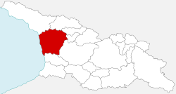

სამეგრელო (მეგრ. სამარგალო) დასავლეთ საქართველოს ისტორიულ-გეოგრაფიული მხარე. ეს არის მდინარე რიონს, ცხენისწყალს, ენგურსა და შავ ზღვას შორის მოქცეული ტერიტორია. სახელწოდება მომდინარეობს ისტორიული მხარის ეგრისის სახელიდან. ქართულ წერილობით წყაროებში იხსენიება XII საუკუნიდან. თავდაპირველად გაიგივებული იყო მთლიანად დასავლეთ საქართველოსთან (მსგავსად აფხაზეთისა, იმერეთისა), XIII-XV საუკუნეებში უკვე ვიწრო მნიშვნელობა აქვს — აღნიშნავს ქართველების ეთნოგრაფიული ჯგუფით — მეგრელებით — დასახლებულ მხარეს მდინარეებს ფსირცხასა (ძვ. ანაკოდიისწყალი) და ცხენისწყალს შორის. ცენტრალური ქალაქია ზუგდიდი.

გვიანდელ შუა საუკუნეებში ამ ტერიტორიაზე ოდიშის სამთავრო შეიქმნა, ახალი სახელწოდებაც აქედან მიიღო — ოდიში, თუმცა უცხოურ წყაროებში „სამეგრელოდან“ ნაწარმოები სახელწოდებებიც გვხვდება. XIX საუკუნის პირველ ნახევარში ლიტერატურაში ისევ დამკვიდრდა სახელწოდება „სამეგრელო“. XVII საუკუნის I ნახევარში აფხაზ ფეოდალთა მოძალების შედეგად, დროთა განმავლობაში სამთავროს საზღვარმა ჯერ მდინარე კელასურზე, შემდეგ ღალიძგაზე, ბოლოს კი ენგურზე გადმოინაცვლა.
დონ კრისტოფორო დე კასტელის ცნობით, მისი საქართველოში მოღვაწეობისას (1627-1654 წწ), სამეგრელო ტერიტორია ვრცელდებოდა რიონიდან კოდორამდე.სამეგრელო დასავლეთ საქართველოს ცენტრალურ ნაწილში მდებარეობს. მისი დასავლეთი საზღვარი შავი ზღვის სანაპიროს მიუყვება. ჩრდილო საზღვარი ჯერ მდინარე ენგურს ემთხვევა, მისი შესართავიდან სოფელ ფახულანამდე, შემდეგ მდინარე ერისწყლის აუზის გორაკ–ბორცვიან ზოლზე და ოხაჩქუეს მასივზე გაივლის. ამ მასივის ჩრდილოეთით სამეგრელოს საზღვრებში შემოდის მდინარე საკალმახოს, ბერზუგაბის, ჩხიანის, გვალათონას, მანდიის და – ჭალეს (ენგურის მარჯვენა შენაკადი) აუზები, რომლებიც კოდორის ქედის თხემური ზოლის სამხრეთ კიდეზე აღმართულ აკიბას მასივის აღმოსავლეთ ფერდობზე მდებარეობენ.